深秋｜节气｜ 霜降 ｜时间｜ 十月廿三日至十一月七日
今年霜降需特别注意的健康问题：胃痛、咳嗽、哮喘、便秘
原料：墨鱼干、肥肉或鸡肉、莲藕、莲子、枸杞子、陈皮、带皮生姜。
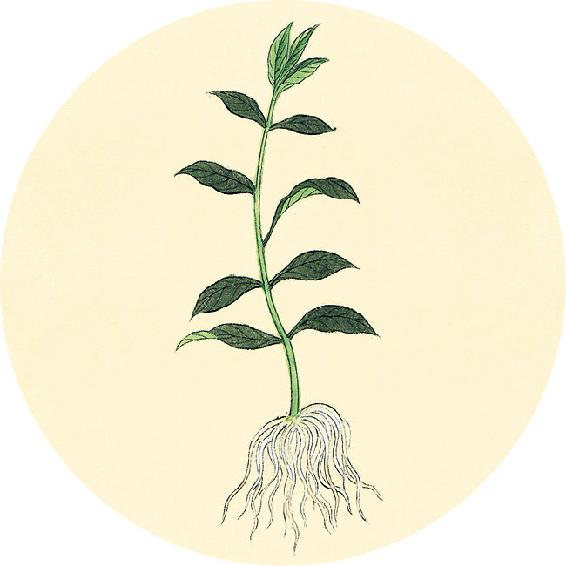
节气食方（一）
银耳羹（从秋分吃到立春）
银耳与枸杞子是百搭。炖各种配方的银耳羹，都可以放入一把枸杞子，来增强补肝肾的作用。枸杞子可以不下锅，直接放入银耳羹中食用。全家人都可以喝。
银耳枸杞羹
原料：银耳1小朵，桂圆肉、百合、枸杞子各1把。
做法：先用小火将银耳、百合、桂圆肉一起炖到汤汁深浓，起锅后放入一把枸杞子，晾温食用。
色见上下左右，各在其要。上为逆，下为从；女子右为逆，左为从；男子左为逆，右为从。易，重阳死，重阴死。
——黄帝内经·素问·玉版论要
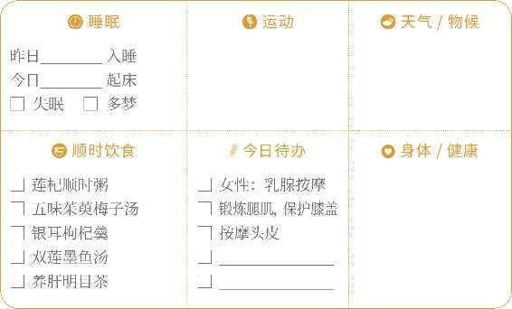
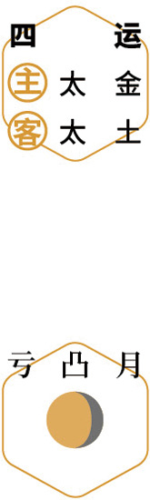
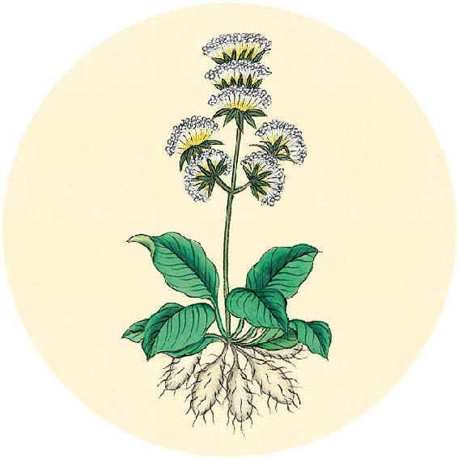
节气食方（二）
双莲墨鱼汤
原料：墨鱼干1～2只、肥肉或鸡肉50克、莲藕250克、莲子20粒、枸杞子20粒、陈皮1/2个、生姜（带皮）3片。
做法：
1. 莲藕切段，墨鱼不要拆骨，连骨一起炖。
2. 全部原料一起放锅内加冷水，大火烧开，转小火炖40分钟至1小时。
3. 加少许盐，关火。
4. 起锅后将墨鱼骨取出。
功效：养肝血，补心脾，可用于熬夜后补身。
【释义】客色呈现在鼻部上下左右，必须注意分别察看它的不同特点。病色向上移的为逆，向下移的为顺，女子病色在右侧的为逆，在左侧的为顺；男子病色在左侧的为逆，在右的为顺。如果男女病色变易部位，反顺为逆，（对男子来说）是重阳，会死；（对女子来说）是重阴，会死。
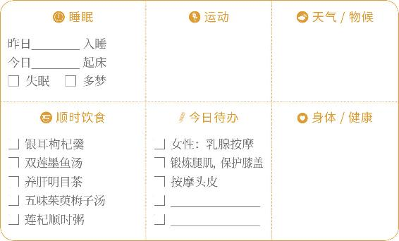
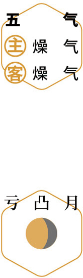
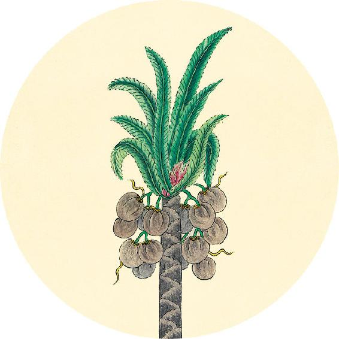
二十四节气茶养生
今年霜降节气品茶推荐：菊花茶。
养肝明目茶
原料：带壳桂圆干6粒、红枣4个、枸杞子5克、杭菊花2朵，喜饮茶者可加红茶6克。
做法：沸水闷泡饮用。
功效：滋养双目，缓解用眼疲劳，防止双眼干涩发红。
搏脉，痹躄，寒热之交。脉孤为消气，虚泄为夺血。孤为逆，虚为从。
——黄帝内经·素问·玉版论要
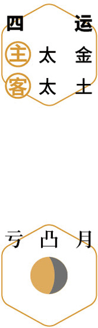
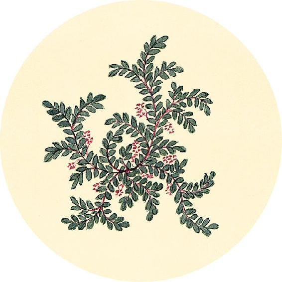
健康提示
霜降节气的养生功课：滋养肝血、暖血补血。
霜降节气从秋到冬过渡，季节变换非常明显。养生重点，是为冬天做准备。先把肝血养足，到立冬后才好开始补肾的功课。
今年霜降的养生特殊重点——
保养重点：胃、大肠。
容易出现的问题：胃痛、咳嗽、哮喘、便秘。
【释义】脉来搏击于指下，主痹证（肢体疼痛麻木之病）和瘸腿病，是寒热之气交加。如脉孤（无胃气），是元气内损；如脉虚，是脱血。脉孤为逆（预后不佳），脉虚为顺（预后尚可）。
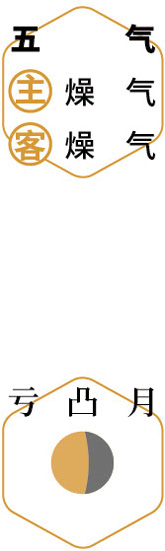
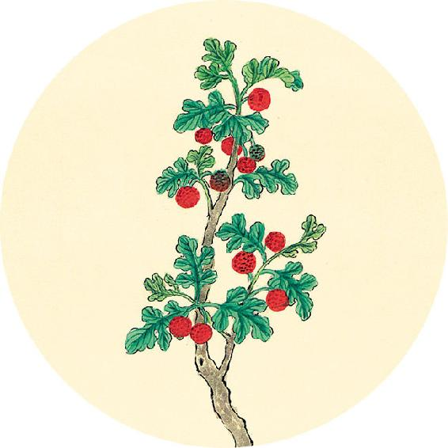
一候反思
秋分以后到现在是否出现：
晚上睡不着 □ 是 □ 否
半夜醒来 □ 是 □ 否
经常做梦 □ 是 □ 否
任何一个答“是”，喝银耳羹时加入桂圆肉、百合干和枸杞。并在明年日历（2022年）的春分节气开篇页，标注“春分到谷雨重点养生”。
正月二月，天气始方（“方”同“放”），地气始发，人气在肝。
——黄帝内经·素问·诊要经终论
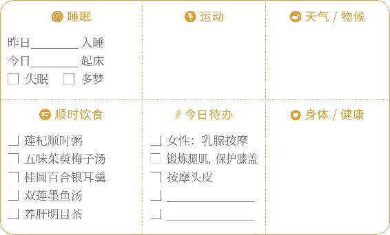
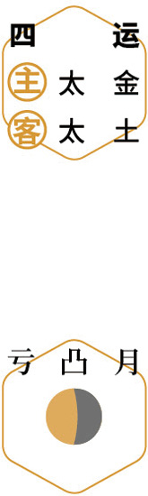
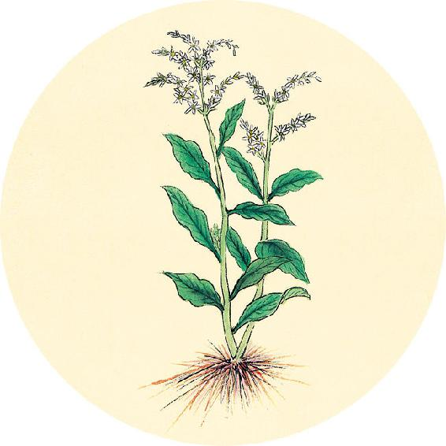
健康提示
明天是世界脑卒中日。
2018年《全球脑卒中报告》显示：中国脑卒中发病率位居第一，平均每12秒就有一人发生脑卒中，每21秒就有一人死于脑卒中。全国每年死于脑卒中的患者近200万，幸存者中，约70%留有永久性残疾。
从现在直到明年春天，老年人出门要戴好帽子了。头部受风容易引起头晕，头部受寒会使脑部血管收缩，容易引发脑卒中。
【释义】正月二月，天气开始生发，地气开始萌动，这时候的人气在肝。
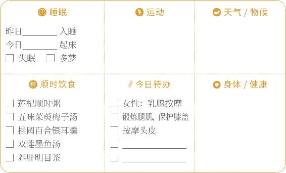
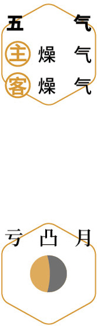
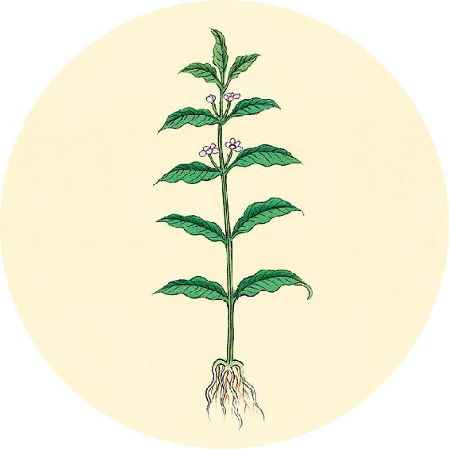
健康提示
脑卒中的预防
饮食预防
疏肝理气：玫瑰、青皮。 祛湿消痰：花椒、陈皮。
补气温阳：黄芪、党参。 活血养血：藏红花、当归。
降脂降压：荷叶山楂陈皮茶、葛根粉。
居家预防
1. 经常用粗齿木梳按摩头皮，疏通头部经络。
2. 用陈皮、珍珠、琥珀、玫瑰、野菊花等中药做成药枕睡觉。
三月四月，天气正方（“方”同“放”），地气定发，人气在脾。
——黄帝内经·素问·诊要经终论
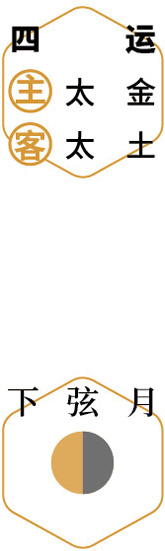
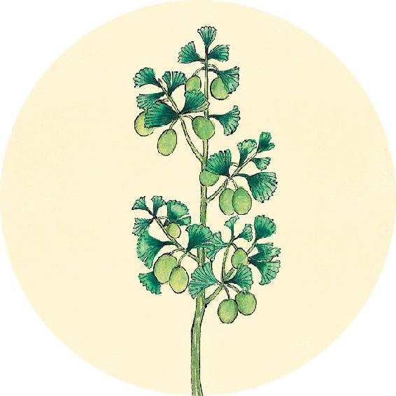
健康提示
专补人体之“漏”的山茱萸
当人体的精气往外漏，肾会衰老，人会提前进入老龄期。山茱萸专治这种精气不固造成的“漏”。
肾虚的人、老年人，以及面黄肌瘦或遗尿的儿童，秋冬可以常服山茱萸（每次5～15克），对于肾虚引起的头晕目眩、耳鸣、耳聋、腰腿酸软、夜尿、没有力气都有帮助，久服还能强筋壮骨。
注意：山茱萸是补虚的，急性咳嗽痰多时暂时停喝。
【释义】三月四月，天气正在生发，地气正在升腾，这时候的人气在脾。
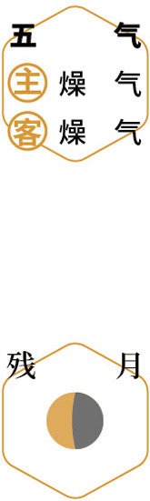
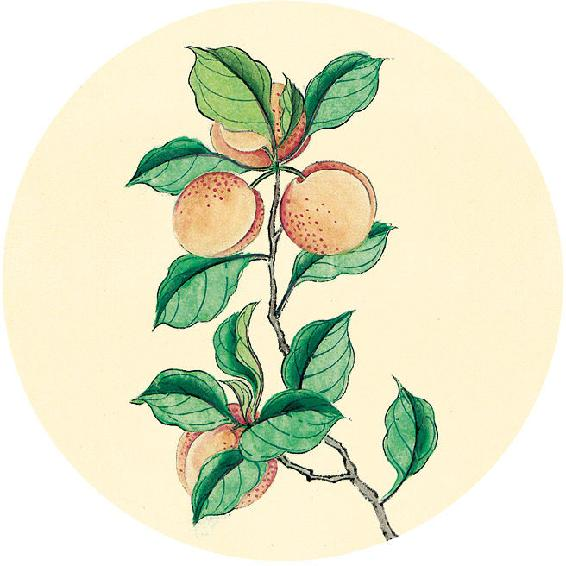
二候反思
是否经常有以下现象，又不明原因：
头晕、恶心 □ 是 □ 否
手臂无力、手指发麻 □ 是 □ 否
吞咽食物时有梗阻感、食管内有异物感 □ 是 □ 否
视力下降、视物模糊，眼睛胀痛、怕光、流泪
□ 是 □ 否
心前区疼痛、胸闷、心律失常（检查没有冠心病）
□ 是 □ 否
单侧胸大肌和乳房疼痛（检查没有乳腺疾病）
□ 是 □ 否
腿部麻木、疼痛，走路感觉虚浮 □ 是 □ 否
突然扭头时会摔倒 □ 是 □ 否
有任何一个答“是”，可检查一下是否有颈椎曲度改变。如有，可用颈椎枕纠正颈椎变形（做法见9月2日）。
五月六月，天气盛，地气高，人气在头。
——黄帝内经·素问·诊要经终论
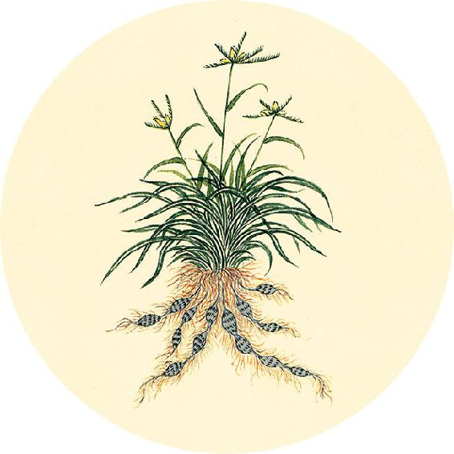
健康提示
清温手心贴
原料：栀子、桃仁、杏仁、白胡椒各7粒。
做法：把这四种原料打成粉，加油或鸡蛋清调和成药泥，用纱布包起来贴敷在手心或手腕、脚心、胸口，12～16小时后取下。皮肤能耐受的人可以贴24小时，时间长一点效果更好。
功效：引毒外出、清心火、化痰、安神、促进睡眠。
调理：肺炎、高热、咳嗽、哮喘、胸闷、高血压。
注意：孕妇忌用，女性经期出血量大时慎用。
【释义】五月六月，天气盛极，地气高升，这时候的人气在头部。
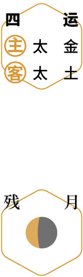
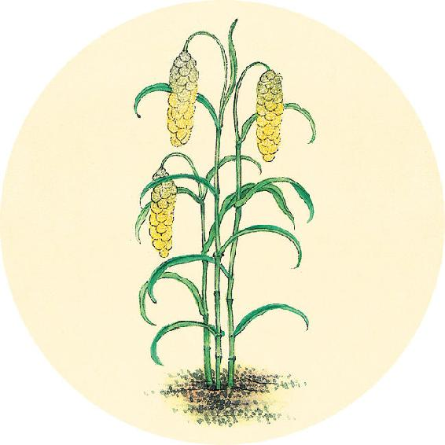
健康提示
清温手心贴贴敷部位的选择（一）
⃞ 经常感觉胸闷
⃞ 平时血压高
⃞ 动脉硬化、心血管亚健康的人
⃞ 雾霾天气感觉不适
有以上任意一种情况，平时可以贴敷手腕和胸口来保健。
用法：敷在左手手腕（内关穴），和胸口膻中穴位置。
七月八月，阴气始杀，人气在肺。
——黄帝内经·素问·诊要经终论
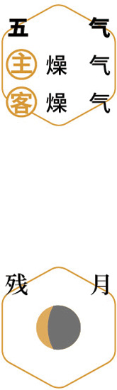
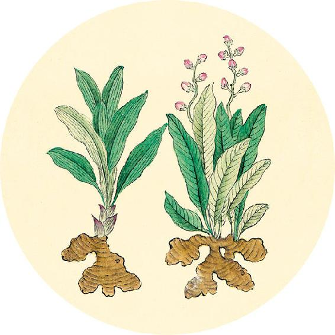
健康提示
清温手心贴贴敷部位的选择（二）
⃞ 感冒高热、咳嗽、哮喘、肺炎、支气管炎、咽炎等呼吸道疾病的人
⃞ 经常腹胀、消化不良的人 ⃞ 便秘的老年人
⃞ 心烦、心火重导致睡眠不好的人
有以上任意一种情况，可以贴敷手心和脚心。
1. 一岁以下的幼儿只贴敷单侧的手心和脚心，第一次贴敷左脚心和右手心，第二次贴敷右脚心和左手心。
2. 其他人可以同时贴敷双手心、双脚心。
如果肺炎、咳嗽痰黄，可以配合鱼腥草茶；如果高热，可以配合蚕沙竹茹陈皮水。
【释义】七月八月，阴气开始肃杀，这时候的人气在肺。
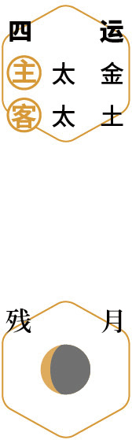
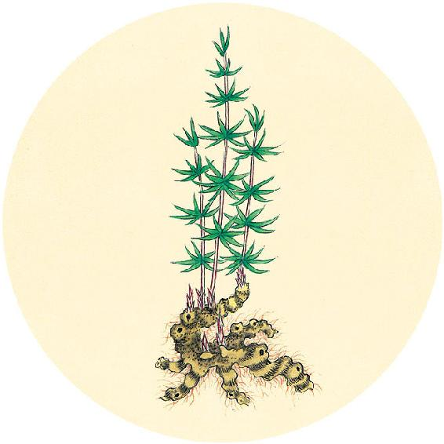
食材准备
1. 凉拌茴香菜
原料：新鲜茴香菜、豆瓣酱。
2. 白果墨鱼汤
原料：白果、墨鱼干、肥肉或鸡肉、枸杞、生姜、川陈皮。
3. 节气养生茶
原料：小茴香、甘草、红雪茶。
4. 银耳羹
原料：银耳、枸杞、桂圆、百合等。
5.“开路汤”（喝六之气保健方前三天的预备食方）
原料：葱白连须、生姜、白萝卜。
6. 五味茱萸梅子汤（从秋分吃到小雪前日，做法见10月5日）
7. 辛丑岁全年保健粥：莲杞顺时粥（做法见2月10日）
原料：炒荷叶、川陈皮、枸杞子、莲子、茯苓、粥料。
九月十月，阴气始冰（“冰”应作“凝”），地气始闭，人气在心。
——黄帝内经·素问·诊要经终论
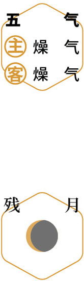
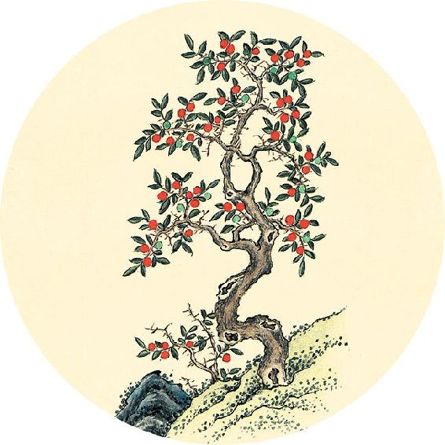
今天是寒衣节，与清明、中元一样是祭祖的日子。
节气总结备
银耳羹________次
双莲墨鱼汤________次
五味茱萸梅子汤________次
莲杞顺时粥________次
养肝明目茶________次
身体哪些方面有改善_________________________
【释义】九月十月，阴气开始凝结，地气开始闭藏，这时候的人气在心。
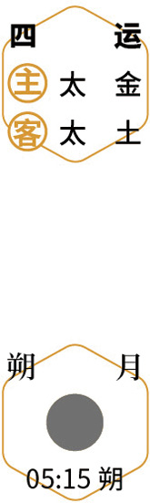
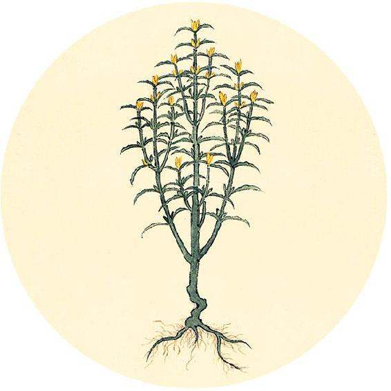
换季的前一天，古称“绝日”，这个周末最好是在家安养。
秋季回顾
6个节气中有________个节气坚持了节气饮食
秋季的养生功课还做了（请打钩）：
□ 常吃银耳 □ 补肝血
□ 茱萸保健 □ 登山秋游
□ 了解各种健康日普及的健康知识
身体哪些方面有改善_________________________
是否生过病 □ 是 □ 否
我给自己的秋季养生功课打________分
十一月十二月，冰复（一作“水伏”），地气合，人气在肾。
——黄帝内经·素问·诊要经终论